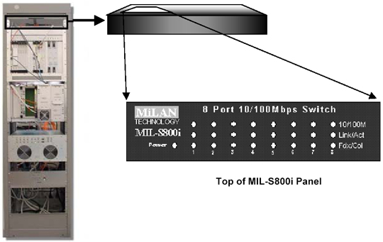
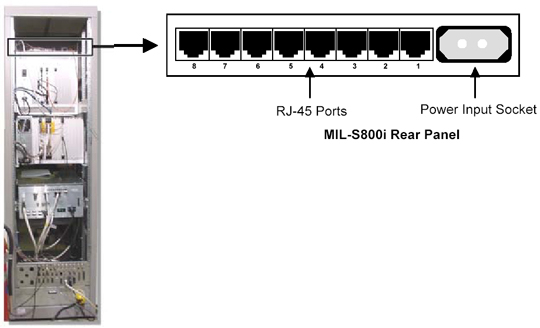

Operating Documentation
Direction 5133330-3, Rev# 14
Signa EXCITE HD 3.0T Service Methods
Module Version 2.0, Version Date 12/19/08
Operating Documentation |
| Required Persons | Preliminary Reqs | Procedure | Finalization |
|---|---|---|---|
| 1 |
The Milan 8-Port 10/100 Fast Switch (shown in Illustration 1) is used to receive and transfer data between the host computer and the System Cabinet. The switch is applied with Velcro® to the top of the MGD Chassis, and the RJ45 switch connections and power jack can be accessed from the back of the Cabinet.
| Item | Qty | Effectivity | Part# | Manufacturer | |
|---|---|---|---|---|---|
| Standard Field Hand Tool Kit | 1 | - | - | - | |
| NOTE: | Refer to the Cabinet Power Down Procedure. |
Remove the power plug from the outlet at the back of the Network Switch. (See Illustration 2.)
Remove the RJ45 connectors from the back of the switch, making a note of the order and placement of the terminal wires that they plugged into.
Detach the Velcro holding strap, and remove the defective Network Switch.
Reverse the process for installation.
Illustration 1: Network Switch - Front View

Illustration 2: Network Switch - Rear View

Ensure that all connectors are installed in the correct slots.
Plug in the Network Switch’s power connection.
Reset the TPS.
If reset is successful, this unit is working. Otherwise, run all tests under MGD Host Datapath to troubleshoot.